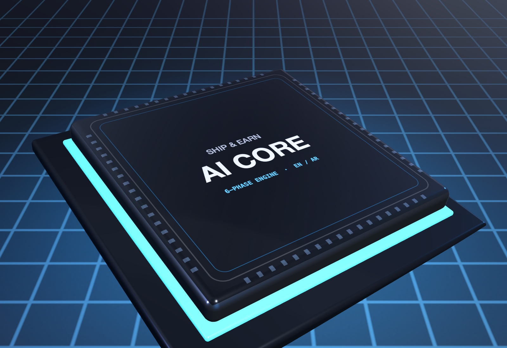

1. Start with a narrow, painful problem — never a broad AI wrapper
The fastest way to waste two months is building a generic "AI assistant for everything." Profitable solo apps solve one sharp, recurring workflow: invoice reconciliation for freelancers, caller identification, photo cleanup, or localized compliance checklists.
Before writing a single prompt, validate three signals: people actively search for the problem on Google or the App Store, competitors already charge $9–$49/month for clunky solutions, and you can deliver the core result in under 60 seconds after signup.
2. Write a one-page Architecture & UX Spec before prompting
AI coding agents drift when given vague one-liners. Write a concise Markdown specification defining four constraints:
- Core user journey: The exact 3–5 screens required for version 1.0 (no extra dashboards).
- Data schema: Every table or JSON model, field types, and ownership rules.
- Visual contract: Typography, spacing scale, color tokens, and banned generic patterns.
- Verification criteria: What must pass on desktop, mobile, and edge-case inputs before shipping.
3. Build in vertical slices, not horizontal layers
Instead of asking AI to generate "the entire frontend" and then "the entire backend," implement one thin vertical slice at a time: authentication first, then the single primary workflow, then billing, then analytics. Commit to Git after every verified slice so you always have a clean rollback point.
4. Design interfaces that earn immediate human trust
Users subconsciously recognize low-effort AI templates — glowing purple gradients, floating badges, vague headlines, and broken mobile tables. Replace them with clear hierarchy, generous contrast, honest copy, and CSS Logical Properties so English (LTR) and Arabic (RTL) users get an equally refined experience.
5. Ship with built-in distribution from day one
Never treat marketing as an afterthought. Every app you launch should ship with a fast landing page, structured JSON-LD metadata, at least one free interactive calculator or micro-tool (like our Revenue Simulator), and clear three-tier pricing.
| Stage | Target Duration | Concrete Deliverable |
|---|---|---|
| 01. Validation & Spec | 2 days | 1-page spec + keyword demand check |
| 02. Vertical Slice MVP | 5 days | Working core workflow in Git |
| 03. UI Polish & Billing | 3 days | Editorial UI + Stripe / IAP paywall |
| 04. Organic SEO Launch | 4 days | Landing page, sitemap, 3 intent guides |